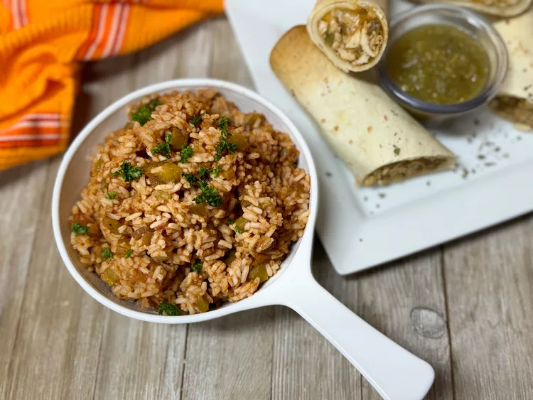

Microwave Mexican Rice

The Recipe
This no-fuss microwave Mexican rice is quick and simple. Using instant rice, it comes together in a flash, and
goes great with tacos, burritos, and enchiladas.
Ingredients
- 2 cups instant rice
- 2 cups water
- 1 cup picante sauce
- 1 (4oz) can chopped green chiles
- 1/2 (1oz) envelope taco seasoning
Steps
- Place minute rice, water, picante sauce, green chiles, and taco seasoning in a large microwave-safe baking
dish. Stir until evenly combined.
- Microwave, uncovered, on High for 8 minutes. Let sit for 5 minutes to absorb liquid. Fluff with a fork and serve.
Stolen from Allrecipes.com ... yuck